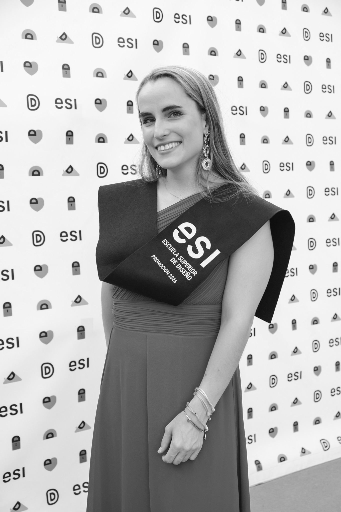

Baby TOUS
Diferentes elementos que forman parte de la identidad visual de la marca: la caja del producto, la tote bag y el peluche.
Una estética infantil, dulce y reconocible, con colores pastel y motivos florales.
Soy Carmen Marcos Fernández, diseñadora gráfica en Valladolid. Identidad visual, packaging, tipografía, cartelería y señalética.

Cada packaging utiliza colores, formas, tipografías e ilustraciones propios para transmitir la personalidad del producto.
Diferentes elementos que forman parte de la identidad visual de la marca: la caja del producto, la tote bag y el peluche.
Una estética infantil, dulce y reconocible, con colores pastel y motivos florales.
Tres identidades para proyectos distintos: una aplicación de rutas, un vino con Denominación de Origen y un cliente ficticio con su propio packaging.
Aplicación móvil gratuita que ofrece rutas peatonales seguras para reducir la inseguridad real y percibida en la ciudad.
La identidad se basa en la seguridad, la confianza, la sostenibilidad y la comunidad. Sus formas sinuosas y coloridas transmiten:
Proyecto de autor de Pesquera de Duero (Ribera del Duero). Une el código de Valladolid (47) con un guiño a las siglas romanas SPQR, y apuesta por elaboraciones singulares como la crianza en huevo de hormigón.
Linograbado: técnica artesanal en blanco y negro que evoca tradición y terruño.
Mito romano: figura de corte clásico coronada de vid.
Contraste 47: el trazo magenta rompe el clasicismo para reflejar modernidad y edición limitada.
Marca para una compañera tratada como cliente real. Tras varias reuniones para recabar información nació Lume, que significa brillo o luz propia, en consonancia con la personalidad de la clienta.
El logotipo mezcla tipografía e ilustración: una estrella que refuerza el significado y le da carácter. La gama de color se basa en amarillo y naranja.
Propuestas de diseño gráfico y tipográfico. Cada cartel tiene su propia composición, paleta y tratamiento tipográfico según la obra que representa.
HerCartel cinematográfico basado en una ilustración del protagonista, minimalista y con colores intensos sobre fondo azul.
Hijo de la LunaFormas geométricas, contrastes de color y una composición dinámica para contar el carácter dramático de la canción.
TipografíaTres carteles sobre la historia de la letra: tipografías clásicas, la Bodoni y la anatomía de cada carácter con anotaciones.
Un lenguaje geométrico y modular que facilita la orientación dentro del museo. Tipografía, pictogramas y color organizan la información de forma clara y accesible.
Los distintos soportes se adaptan a los espacios y recorridos del edificio.
Oficinas M&M'sPlacas para cada departamento en las que los personajes de la marca representan la actividad de cada área, como Finanzas o Atención al cliente.
Propuestas con tonos muy distintos: una pieza misteriosa sobre el tarot, un anuncio navideño basado en una escena familiar y la parodia de un informativo con noticias absurdas. Imagen, sonido y narrativa al servicio del misterio, la publicidad y el humor.
Rediseño de una aplicación existente, Microsoft Teams, para resolver los problemas de organización y navegación de la propia aplicación.
Aplicaciones de identidad y experiencia para el restaurante Arrope y el enoturismo de Yllera.
SeñaléticaAcompaña al visitante durante el recorrido con materiales, tonos y formas que dialogan con el entorno histórico, sin romper la atmósfera del lugar.
MantelSoporte integrado en la degustación: organiza las cuatro posiciones de cada comensal e incluye códigos QR hacia El Hilo de Ariadna y el restaurante.
Tarjeta de visitaDos caras diferenciadas, una para Arrope y otra para Yllera, que refuerzan la conexión entre restaurante, bodega y enoturismo.
Soy diseñadora gráfica con formación en diseño y experiencia profesional en Bodegas Yllera. Me especializo en identidad visual, packaging, tipografía, cartelería, señalética e infografía.
Me enfoco en desarrollar conceptos visuales con una intención clara, combinando creatividad, funcionalidad y atención al detalle. Destaco por mi capacidad de trabajo en equipo, por aportar nuevas ideas y por orientarme a proyectos con objetivos concretos.
Tarjetas, presentaciones, cartelería, señalética, carteles de mesa y manteles, además de piezas de vídeo y animación.
Escuela Superior de Diseño de Valladolid (ESI). Experiencia práctica mediante concursos y proyectos reales para empresas.
Estoy abierta a nuevos proyectos y oportunidades. Escríbeme y te respondo lo antes posible.